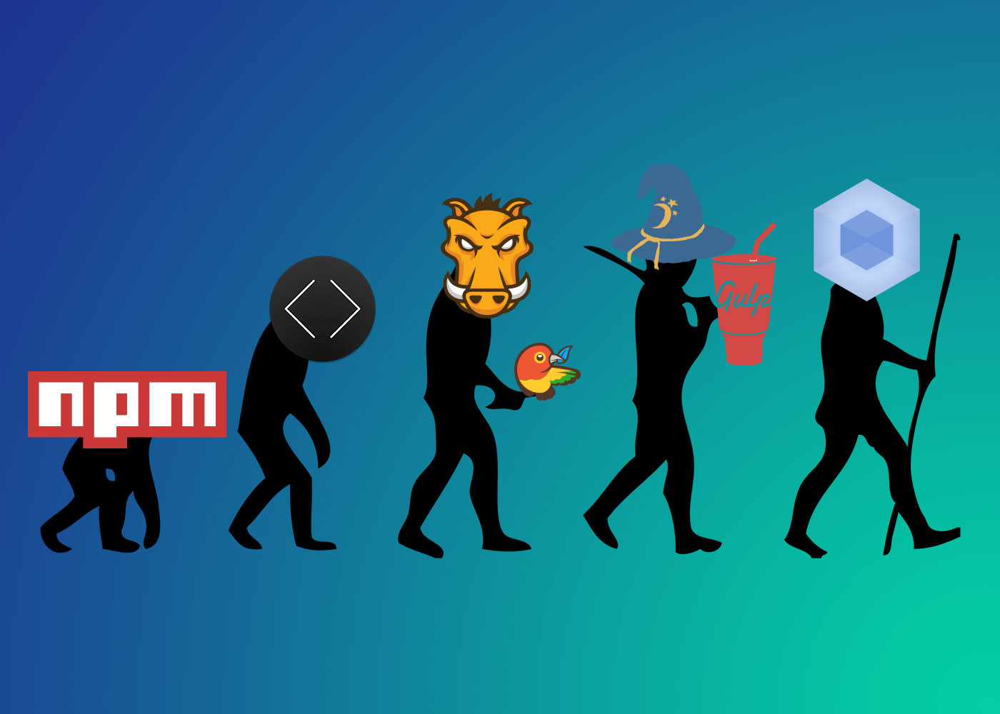

-프론트엔드 웹 개발환경 셋팅-
2017. 7. 19.
IT 개발2팀 UI파트 - 김재호
The Agenda
- Javascript 모듈의 필요성
- webpack 소개
- webpack 설치 가이드
- webpack 사용방법 (번들링)
- webpack 설정
Javascript 모듈의 필요성
Javascript의 문제점
- 글로벌(전역) 스코프가 쉽게 오염
- 동일한 이름을 가진 변수 사용 (이름 충돌 문제)
- 올바른 의존성 순서
- 웹페이지가 커질수록 script 태그 수 의 증가
index.html
<script src="../js/lib/jquery.min.js"></script>
<script src="../js/lib/bootstrap.min.js"></script>
<script src="../js/app.js"></script>
<script>
$(function() {
//암묵적 전역
//var 키워드 생략 시 전역변수로 인식
foo = '';
});
</script>
Javascript 전역 문제 해결 방법
//IIFE (Immediately Invoked Founction Expression)
(function() {
/* code here */
})();
//'App' 같은 하나의 전역객체 밑에 네임스페이스를 갖습니다.
var App = App || {};
App.Models = {};
App.Models.Note = function() {};
Javascript 의존성 관리
코드베이스가 커지면 유지보수가 쉽도록 코드를 나누어 관리하는 모듈 시스템이 필요
- CommonJS (서버 사이드)
- AMD (클라이언트)
CommonJS
- JS의 활용성을 높이려는 자발적 워킹그룹
- JS를 범용 프로그래밍 언어로 만드는 것이 목적
- JS 모듈 관리에 관한 코딩 표준을 제시함
var lib = require( "package/lib" );
function foo() {
lib.log( "hello world!" );
}
module.exports = foo;
AMD (Asynchronouse Module Definition)
- 브라우저에서의 JS 모듈 활용성을 높일 목적으로 CommonJS에서 파생됨
- jQuery를 비롯 다수의 오픈소스 솔루션이 AMD를 지지
- AMD 표준을 준수하는 가장 대표적인 RequierJS
- CommonJS와 마찬가지로 JS 모듈 관리에 관한 코딩 표준을 제시함
define(["package/lib"], function (lib) {
function foo() {
lib.log( "hello world!" );
}
return {
foobar: foo
}
});
require(["package/myModule"], function(myModule) {
myModule.foobar();
});
UMD (Universal Module Definition)
AMD + CommonJS + IIFE 를 모두 지원하는 모듈
(function (root, factory) {
if (typeof define === 'function' && define.amd) {
//AMD
define(['jquery'], factory);
} else if (typeof exports === 'object') {
//Node, CommonJS-like
module.exports = factory(require('jquery'));
} else {
//Browser globals (root is window)
root.returnExports = factory(root.jQuery);
}
}(this, function ($) {
//methods
function myFunc(){};
//exposed public method
return myFunc;
}));
모듈 시스템의 도입

ES6 스펙부터 언어자체적으로 가능한 모듈 시스템을 도입
ES6 - Modules
- export 모듈 선언 / import 모듈 사용
- 전역변수 오염없이 모듈을 선언하고 사용할 수 있도록 지원
- 자주 사용되는 코드를 필요할 때마다 재사용
import lib from 'package/lib';
export function foo() {
return lib.log( "hello world!" );
}
하지만..
안타깝게도 ES6가 2015년에 나온지 2년이 지난 지금 브라우저내에서
import, export는 아직 구현되지 않은 기능입니다.
모듈 번들러란? (Browserify, webpack)
브라우저에서 아직 지원이 되지 않는 모듈을
사용 할 수 있도록 하는것이 모듈 번들러의 주요 기능
webpack 소개
 그림 1. 모듈 번들러 웹팩
그림 1. 모듈 번들러 웹팩
번들러 끝판왕 웹팩 그림처럼 여러 파일들을 하나로 합쳐줍니다. JS가 점점 중요해지면서 JS 자체만으로도 엄청난 의존 관계가 생겼습니다.
ES6 모듈, RequireJS, CommonJS같은 JS 모듈 시스템들이 나오면서 JS 파일도 다른 프로그래밍 언어처럼 모듈 개념이 생겼습니다. import나 require로 js끼리 서로 의존합니다. 특히 노드로 만들다 보면 모듈이 기본 수 백개에서 많게는 수 만개까지 갑니다. 이런 것을 하나의 JS로 합쳐주는 거죠.
webpack 설치 가이드
Node.js 설치


webpack을 사용하기 위해선 Node.js가 필수로 설치 되어 있어야 합니다.
아래 사이트를 방문하여 OS에 맞는 버전으로 설치합니다.
디렉터리 구조
[webpack2-demo]
├── dist # output 디렉토리, 프로덕션 환경 배포 파일
├── node_modules # npm package들이 설치된 디렉토리
├── src
│ ├── app.js
│ └── app.css
├── index.html
├── package.json # 프로젝트 구성 정보
└── webpack.config.js # 웹팩 설정 파일
프로젝트 초기화
커맨드를 실행 후, 프로젝트 폴더로 이동해서 Node.js 프로젝트를 생성합니다.
package.json 파일이 생성됩니다.
$ npm init
잠깐 살펴보는 리눅스, npm 명령어
$ mkdir [folderName] # 디렉토리 생성
$ touch [fileName] # 파일 생성
$ npm init -y # 입력 생략
$ npm i jquery # i === install
$ npm i -S jquery # -S === --save
$ npm i -D jquery # -D === --save-dev
$ npm un -D jquery # un === uninstall
# Node.js Path API
# 현재 파일 경로
__filename; # D:\workspace\diagram\main.js
# 현재 디렉토리
__dirname; # D:\workspace\diagram
# 경로 연결
path.join(__dirname, '/test') # /home/dirname/test
# 상대적인 경로로 연결
path.resolve('/foo/bar', './baz') # /foo/bar/baz
webpack 설치
webpack CLI 팩키지는 가능한 로컬에 설치해서 상대 경로를 사용하거나
npm 스크립트로 팩키지를 실행하는 것이 좋습니다.
# 전역 설치
$ npm install webpack -g
# 로컬 설치
$ npm install webpack --save-dev
webpack 사용방법 (번들링)
빌드된 코드를 로드할 html 파일
index.html
<html>
<head>
<meta charset="utf-8">
</head>
<body>
<h1>Hello Webpack</h1>
<script type="text/javascript" src="dist/app.bundle.js"></script>
</body>
</html>
번들 파일 생성 (app.bundle.js)
다음과 같이 명령어를 실행하여 모듈을 컴파일할 수 있습니다.
app.js
console.log('Hello Webpack');
# webpack {엔트리 파일 경로} {번들 파일 경로}
$ webpack ./src/app.js ./dist/app.bundle.js
ES6 - module 사용해 보기
hello.js
export default function hello() {
console.log('Hello Webpack!!!!');
}
app.js
import hello from './hello'
hello();
//console.log('Hello Webpack');
watch 모드
소스코드가 변경될 때마다 자동으로 감지해서 다시 번드링 해주는 기능
개발중에는 주로 watch 모드를 이용
# 엔트리 파일 변경시 자동 리빌드
$ webpack ./src/app.js ./dist/app.bundle.js --watch
or
$ webpack ./src/app.js ./dist/app.bundle.js -w
코드 압축 기능
# minified code
$ webpack ./src/app.js ./dist/app.bundle.js -p
webpack 설정
webpack의 기본적인 4가지 컨셉
- Entry: 웹팩이 파일을 읽어들이기 시작하는 부분을 설정
- Output: 결과물이 어떻게 나올지 설정
- Module: 웹팩을 통해 번들링을 진행할 때 처리해야 하는 태스크들을 실행
- Plugins: 확장기능
webpack 설정 파일
# webpack.config.js 생성
$ touch webpack.config.js
webpack.config.js
// node에서 제공되는 path 사용하여 OS에 따른 파일경로 이슈를 방지
const path = require('path');
module.exports = {
// entry는 진입 파일의 경로 + 파일명
entry: './src/app.js',
// output은 webpack의 번들링 결과물에 대한 설정
// path - 디렉터리경로
// publicPath - 브라우저에서 접근하는 경로
// fileName - 번들링된 파일명
output: {
filename: './dist/app.bundle.js'
}
}
package.json
"scripts": {
"dev": "webpack -d --watch",
"prod": "webpack -p"
}
$ npm run dev # 디벨로프 모드
or
$ npm run prod # 프로덕션 모드
HTML webpack Plugin
html-webpack-plugin 이용해서 index.html 자동으로 만들기
js를 배포하다보면 캐쉬 문제로 v= 을 붙여 주어야 할 때가 많다. html-webpack-plugin을 이용하면 html에 들어갈 내용을 내가 외부에서 동적으로 바꿔서 생성을 할 수 있다. minify 옵션으로 min 파일을 만들 수 있고, ejs템플릿을 사용할 수도 있습니다.
$ npm i html-webpack-plugin --save-dev
webpack.config.js
const HtmlwebpackPlugin = require('html-webpack-plugin');
const path = require('path');
module.exports = {
// ...
plugins: [
new HtmlwebpackPlugin({
title: 'Project Demo',
minify: {
collapseWhitespace: true
},
hash: true,
template: './src/index.html'
})
]
}
index.html
<html>
<head>
<meta charset="utf-8">
<title><%= htmlwebpackPlugin.options.title %></title>
</head>
<body>
<div id="root"></div>
</body>
</html>
Style, CSS loaders
- css-loader: css 파일들을 읽어주고
- style-loader: 읽은 css 파일들을 style 태그로 만들어 head 태그 안에 생성
$ npm i css-loader style-loader --save-dev
webpack.config.js
module.exports = {
// ...
module: {
rules: [{
test: /\.css$/,
use: [ 'style-loader', 'css-loader' ]
}]
}
}
app.js
const css = require('./app.css');
Sass loaders
$ npm i sass-loader node-sass --save-dev
webpack.config.js
module.exports = {
// ...
module: {
rules: [{
test: /\.scss$/,
use: [ 'style-loader', 'css-loader', 'sass-loader' ]
}]
}
}
app.js
const css = require('./app.scss');
SCSS 컴파일, CSS 파일 생성
Extract Text Plugin
$ npm i extract-text-webpack-plugin --save-dev
webpack.config.js
const ExtractTextPlugin = require("extract-text-webpack-plugin");
module.exports = {
module: {
rules: [
{
test: /\.scss$/,
use: ExtractTextPlugin.extract({
fallback: 'style-loader',
use: ['css-loader','sass-loader'],
publicPath: '/dist'
})
}
]
},
plugins: [
new ExtractTextPlugin({
filename: 'app.css'
})
]
}
File Loader
웹팩은 모든 것을 모듈로 처리한다고 했는데 CSS 파일도 모듈로 다룬다. CSS에서 url() 함수에 파일명을 지정할수 있는데 이를 모듈에서 발견하면 웹팩은 file-loader를 통해 파일을 복사(실제 사용되는 파일만 복사)
$ npm i file-loader --save-dev
# 이미지 최적화
$ npm i image-webpack-loader --save-dev
webpack.config.js
module.exports = {
// ...
module: {
rules: [
{
test: /\.(jpe?g|png|gif|svg)$/i,
use: [
'file-loader?name=images/[name].[ext]',
'image-webpack-loader'
]
}
]
}
}
URL Loader
작은 이미지나 글꼴 파일은 복사하지 않고 문자열 형태로 변환 (Data URI Scheme)
$ npm i url-loader --save-dev
10Kb 미만인 svg 파일을 url-loader로 처리하도록 변경
webpack.config.js
module.exports = {
// ...
module: {
rules: [
{
test: /\.(woff2?|svg)$/
use: [
'url-loader?limit=10000&name=fonts/[name].[ext]' // 10kb
]
}
]
}
}
webpack dev server
$ npm i webpack-dev-server --save-dev
webpack.config.js
module.exports = {
devServer: {
contentBase: path.join(__dirname, 'dist'),
compress: true,
port: 8080,
stats: 'errors-only',
open: true
}
}
package.json
"scripts": {
"dev": "webpack-dev-server",
"prod": "webpack -p"
}
HMR (Hot Module Replacement)
HMR은 내용이 변경된 모듈을 페이지 새로고침 없이 런타임에서 업데이트합니다. 업데이트에 실패할 경우 새로고침을 수행합니다.
우리가 코드를 수정하거나 추가하고 저장할 때마다 webpack 이 이를 감지하고 컴포넌트의 상태를 잃지않고 페이지를 새로고침할 필요도 없이 코드를 수정하여준다.
# 페이지를 로딩하지 않는다.
$ webpack-dev-server
# 전체 페이지를 로딩 한다.(Live Reload)
$ webpack-dev-server --inline
# 부분 로딩 또는 전체 페이지 로딩
$ webpack-dev-server --hot --inline
webpack.config.js
const webpack = require('webpack');
module.exports = {
devServer: {
hot: true,
inline: true
},
plugins: [
new webpack.HotModuleReplacementPlugin()
]
}
ES2015 to ES5 with Babel
IE환경을 지원하면서도 ES2015를 쓰기 위해서는 babel 같은 트랜스파일러(Transpiler)가 필수다. webpack에서는 이를 위해 babel-loader에 통과시켜서 ES5 이하의 JavaScript로 만든다. babel-loader를 사용하기 위해서 먼저 babel-loader를 설치한다.
이제부터 프로젝트에 포함된 모든 .js 확장자 파일은 babel-loader를 거치면서 ES5로 트랜스파일된다. 코드를 ES2015로 변경하여 테스트 해보자.
$ npm i --save-dev babel-loader babel-core babel-preset-env
.babelrc
{
"presets": [
["es2015", { "modules": false }]
]
}
webpack.config.js
module: {
rules: [
{
test: /\.js$/,
exclude: /node_modules/,
use: {
loader: 'babel-loader',
options: {
presets: ['env']
}
}
}
]
}
Transpiled from ES2015 to ES5 with Babel
npm install babel-core babel-loader babel-preset-es2015 --save-dev
webpack.config.js
module.exports = {
// ...
module: {
rules: [
test: /\.js$/,
exclude: [/node_modules/],
use: [{
loader: 'babel-loader',
options: {presets: ['es2015']}
}]
]
}
};
스타일, CSS and Sass 로더
npm install css-loader style-loader --save-dev
npm install sass-loader node-sass --save-dev
webpack.config.js
module.exports = {
// ...
module: {
rules: [
{
test: /\.scss$/,
use : ['style-loader', 'css-loader', 'sass-loader']
}
]
}
};
스타일, scss 변환 순수 css 변환
npm install extract-text-webpack-plugin@2.0.0 --save-dev
webpack.config.js
var ExtractTextPlugin = require("extract-text-webpack-plugin");
module.exports = {
// ...
module: {
rules: [
{
test: /\.scss$/,
use: ExtractTextPlugin.extract({
fallback: 'style-loader',
use: ['css-loader','sass-loader'],
publicPath: '/dist'
})
}
]
},
plugins: [
new ExtractTextPlugin({
filename: 'app.bundle.css',
disable: false,
allChunks: true
})
]
};
app.js
const css = require('./app.scss');
console.log('Hello from Webpack');
index.html
<html>
<head>
<meta charset="utf-8">
<link rel="stylesheet" href="dist/app.bundle.css">
</head>
<body>
<h1>Hello Webpack</h1>
<script type="text/javascript" src="dist/app.bundle.js"></script>
</body>
</html>
개발 서버
npm install webpack-dev-server -D
webpack-dev-server
package.json
"scripts": {
//"dev": "webpack -d --watch",
"dev": "webpack-dev-server",
"prod": "webpack -p"
}
npm run dev
Webpack Dev Server Configuration
webpack.config.js
var ExtractTextPlugin = require("extract-text-webpack-plugin");
module.exports = {
// ...
devServer: {
contentBase: path.join(__dirname, "dist"),
compress: true,
port: 9000,
stats: "errors-only",
open: true
}
};
Webpack 출력 최적화
webpack -p
entry
entry 부분이 웹팩이 파일을 읽어들이기 시작하는 부분입니다. app이 객체의 키로 설정되어 있는데 이 부분 이름은 자유롭게 바꾸시면 됩니다. 저 키가 app이면 결과물이 app.js로 나오고, zero면 zero.js로 나옵니다.
새롭게 보이는 속성을 각각 살펴봅시다: entry - 번들의 엔트리 포인트로써 번들하기 색션에서 이미 논의했습니다. Webpack은 여러 번들을 생성하는 진입점을 허용하기 때문에 배열입니다. output - Webpack의 최종 결과물이 되는 형태를 명시합니다. path - Webpack의 최종 결과물이 되는 형태를 명시합니다. filename - 번들 파일의 이름을 지정합니다. 이제 webpack 명령을 실행하면, dit라는 폴더에 bundle.js 파일을 생성합니다.
{
entry: {
app: '',
zero: '',
}
}
{
entry: {
app: ['a.js', 'b.js'],
},
}
output
이제 결과물이 어떻게 나올지 설정을 해야 합니다.
{
output: {
path: '/dist',
filename: '[name].js',
publicPath: '/',
},
}
loader
이제부터 막강한 웹팩의 기능들이 나옵니다. 바로 로더(loader)입니다. 보통 웹팩을 사용하면 babel을 주로 같이 사용합니다. ES2015 이상의 문법들은 IE같은 구형 브라우저랑 호환시키기 위함인데요. 또는 jsx같은 react 문법을 컴파일하려고 하는 목적도 있습니다. babel을 웹팩2와 연결시켜 볼까요? 일단 설치부터 해봅니다.
npm i -D babel-loader babel-core babel-preset-es2015 babel-preset-react babel-preset-stage-0
일단 babel-loader와 babel-core는 필수이고요. 나머지 preset들은 선택입니다. react는 react 하시는 분만 설치하면 되고요. stage-0은 es2015보다도 더 최신 기술을 위한 겁니다.
{
module: {
rules: [{
test: /\.jsx?$/,
loader: 'babel-loader',
options: {
presets: ['es2015', 'react', 'stage-0'],
},
exclude: ['/node_modules'],
}],
},
}
plugin
플러그인은 약간 부가적인 기능입니다. 다양한 플러그인들이 나와있는데 이를 사용하면 효과적으로 번들링을 할 수 있습니다. 예를 들면 압축을 한다거나, 핫리로딩을 한다거나, 파일을 복사하는 등의 부수적인 작업을 할 수 있습니다. 다양한 플러그인들이 패키지로 존재하기 때문에 쇼핑하듯 골라보세요!
{
plugins: [
new webpack.LoaderOptionsPlugin({
minimize: true,
}),
new webpack.optimize.UglifyJsPlugin({
sourceMap: true,
compress: {
warnings: true,
},
}),
new webpack.DefinePlugin({
'process.env.NODE_ENV': 'production',
}),
],
}
output
이제 결과물이 어떻게 나올지 설정을 해야 합니다.